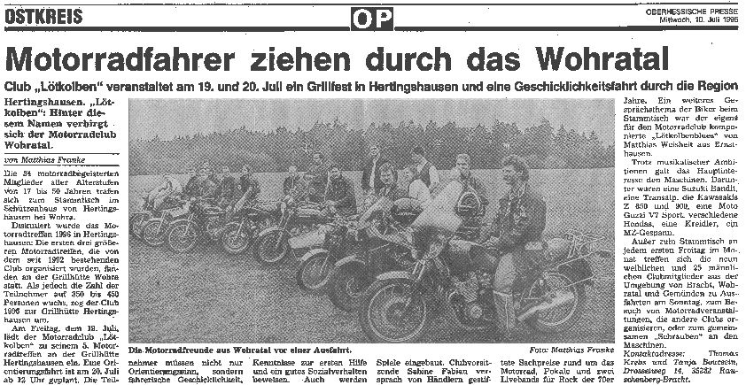

Der Motoradclub Wohratal stellt sich der Öffentlichkeit vor und lädt zu einem Motorradtreffen ein.
"Lötkolben". Hinter diesem sprechenden Namen verbirgt sich der junge Motorradclub Wohratal.
Die 34 motorradbegeisterten Mitglieder aller Alterstufen von 17 bis 50 Jahren trafen sich - wie jeden ersten Freitag im Monat - auch am 5.7.96 ab 19.00 Uhr zum gemeinsamen Stammtisch im Schützenhaus von Hertingshausen bei Wohra.
Diskutiert wurde hierbei das Motorradtreffen 96 in Hertingshausen: Die ersten drei größeren Motorradtreffen, die von dem seit 1992 bestehenden Club organisiert wurden, fanden an der Grillhütte Wohra statt. Als jedoch die Zahl der Teilnehmer auf 350 bis 450 Personen wuchs, wechselte man 1995 wegen Platzmangels zur Grillhütte Hertingshausen.
Am 19. Juli 96 soll es jedenfalls wieder soweit sein! Der Motorradclub Wohratal "Lötkolben" lädt zu seinem 5. Motorradtreffen an der Grillhütte Hertingshausen ein. Höhepunkt des Treffens wird wieder eine Orientierungsfahrt am 20. Juli ab 12.00 Uhr sein. Hierbei müssen die Teilnehmer nicht nur Orientierungssinn, sondern fahrerische Geschicklichkeit, Kenntnisse zur ersten Hilfe und gutes Sozialverhalten beweisen. Sicher werden aber auch diesmal Spiele eingebaut, die den handfesten Humor der Veranstalter offenbaren. Vielleicht ist ja in diesem Jahr der "Mofa-Weitwurf" eine der zu lösenden Aufgaben während dieser Orientierungsrallye. Vorstandsvorsitzende Sabine Fabian versprach von Händlern gestiftete Sachpreise rund um das Motorrad, "selbstgebastelte", -geschweißte Pokale und zwei Livebands für Rock der 70er Jahre.
Ein weiteres Gesprächsthema der gutgelaunten Biker war der extra für den Motorradclub komponierte "Lötkolbenblues" von Matthias Weisheit aus Ernsthausen.
Trotz dieser musikalischen Ambitionen galt jedoch das größere Interesse den eigenen Maschinen. Darunter die Suzuki Bandit, eine Transalp, die Kawasakis Z 650 und Z 900, eine Moto Guzzi V7 Sport, verschiedene Hondas, eine Kreidler, ein MZ-Gespann und viele andere Motorräder.
Außer zum Stammtisch treffen sich die neun weiblichen und 25 männlichen Clubmitglieder aus der Umgebung Bracht, Wohratal und Gemünden zu Ausfahrten am Sonntag, zum Besuch von Motorradveranstaltungen, die andere Clubs organisieren oder zum gemeinsamen "Schrauben" an den Maschinen!
Kontaktadresse: Thomas Krebs u. Tanja Boucsein, Drosselweg 14, 35282 Rauschenberg-Bracht, Tel.:06427/2991.
